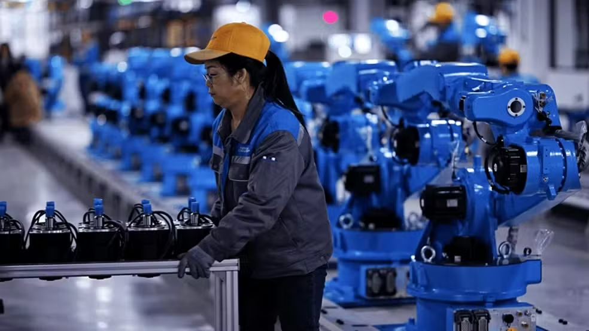

Como os chatbots de IA estão transformando o atendimento ao cliente
A inteligência artificial está transformando radicalmente o atendimento no Brasil através de chatbots modernos baseados em linguagem natural e automação contínua.
A inteligência artificial está transformando radicalmente o atendimento no Brasil através de chatbots modernos baseados em linguagem natural e automação contínua.
Novos avanços em chips de silício prometem escalar a capacidade de processamento em larga escala.
Confira as novidades na checagem de tipos e os ganhos de performance no compilador.
Ferramentas com inteligência artificial ampliam a agilidade, a eficiência e a personalização no contato diário entre empresas e consumidores.
Norte, Nordeste e Centro-Oeste tiveram as maiores altas de contratações. Sudeste ainda concentra mais de 60% dos postos formais.

O governo chinês está investindo US$ 20 bilhões para liderar a inovação em robótica fabril e competir de forma direta com os EUA.
IA do Google apaga todo o armazenamento de programador por engano
O agente de IA do Google Antigravity apagou todo o conteúdo de um drive de armazenamento por engano.
Dúvidas, sugestões de pauta ou parcerias comerciais? Envie uma mensagem para nossa equipe editorial.